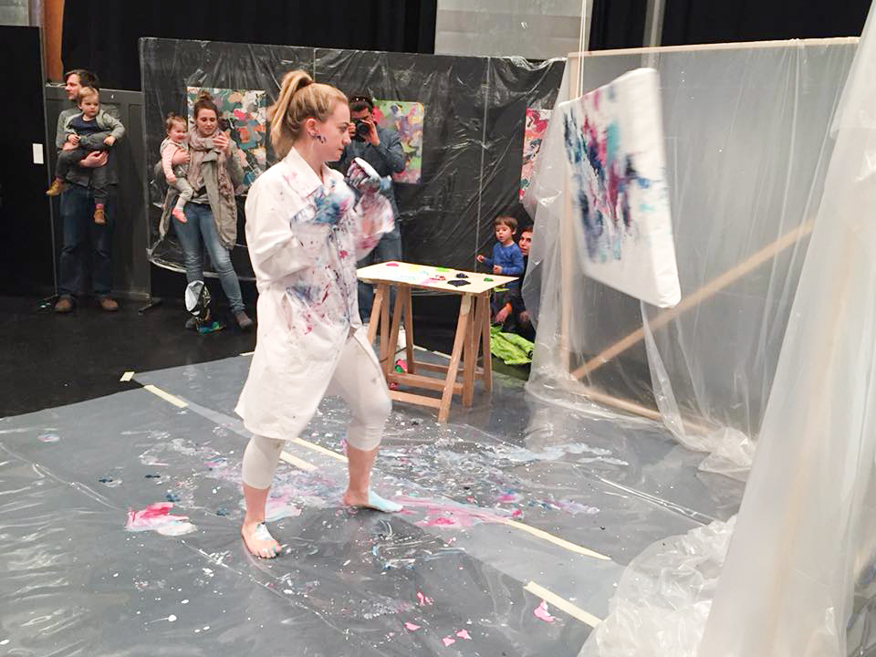
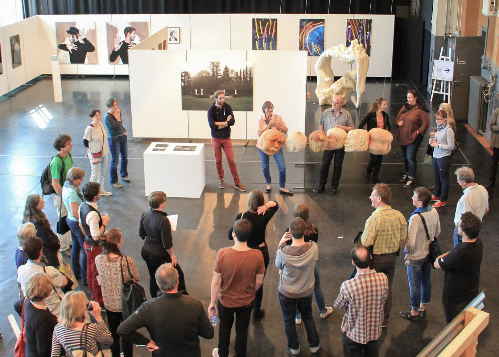
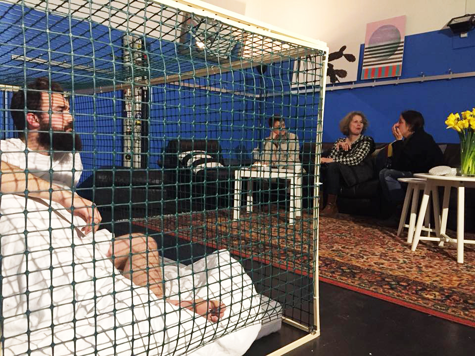

Les commissaires: Janine Strasser, Nermina Serifovic
Les lauréats / les lauréates:
Anina Müller (Prix de la fondation Maurer-Billeter de CHF 5000)
Luca Harlacher (exposition dans la vitrine d’été du Kunsthaus Zofingen LOOK@JKON 2019)
Denis Roueche (exposition dans le “Dienstraum”, musée d‘art d‘Olten, 2020)
Artistes:{%- assign artists = site.artists | where: "artist.year", "2019" | map: "artist" -%} {%- include index/artist-links.html artists=artists -%}
Les commissaires: Tanja Breu, Antonella Barone
Les lauréats / les lauréates: Aramis Navarro, Yasmin Mattich, Alizé Rose-May Monod
Artistes:Alizé Rose-May Monod, Anna Marcus, Aramis Navarro, Corina Schaltegger, Fernando Obieta, Gregor Vogel, Helen Eggenschwiler, Kaspar Flück, Kornelia Hui, Lea Meier, Livio Beyeler, Manutcher Milani, Marlijn Karsten, Michael Reinhold, Mirkan Deniz, Nina Carla Hunziker, Sebastian Haas, Yasmin Mattich
Les commissaires: Shannon Zwicker, Andrina Keller
Les lauréats / les lauréates: Gregor Vogel, Cornelia Fröhlich
Artistes:Adrian Fernandez Garcia, Anouk Strähl, Cornelia Fröhlich, Daniel Züsli, Eliane Hürlimann, Flavia Somalvico, Gregor Vogel, Mathola Wittmer, Mattania Bösiger, Michaela Schmid, Nadja Künzli, Nicolas Witschi, Ramona Köchli, Reto Lienhard, Samuel Rauber, Sonja Berta
Preisträger: Jan Merlin Pulfer, Fabian Matz, Samuel Kunz
Artistes:Corina Heinrich, Daniel Müller, Fabian Matz, Jan Merlin Pulfer, Julia Nussbaumer, Julia Schicker, Laurie Vannaz, Maeva Rosset, Matthias Amsler, Naomi Figueiredo, Nico Sebastian Meyer, Pearlie Frisch, Ruben Frei, Sara Tordini, Samuel Kunz, Selina Zürrer, Thomas Blank
Les lauréats / les lauréates: Charlotte Friedli, Nadia Bader, Roshan Adhihetty
Artistes:Anna Andris-Schwindt, Aresu Khosy, Carol Baumgartner, Charlotte Friedli, Janine Strasser, Manuel Guldimann, Marea Hildebrand, Nadia Bader, Paloma Egger, Polina Chizhova, Rafael Lippuner, Ronja Römmelt, Roshan Adhihetty, Simon Hofmann, Tyrone Richards, Ursina Leutenegger, Micha Reichenbach